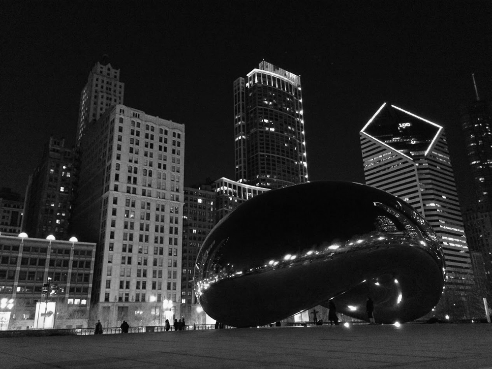

About me
This is I. My name is Jorge. I was born in Mexico 22 years ago and lived a pretty significant part of my life in Los Angeles. However, I now live in The Windy City; Chicago. By the way, that self portrait (selfie) was inspired by Vivian Maier, a Chicagoan photographer.
- The Bean - Chicago
What I took my photos with
| Camera | Price |
|---|---|
| Nikon D3200 | ~$500 |
| Lenses for DSLR | ~$1000 |
| iPhone 5S | ~$500 |
| iPod 5th generation | ~$300 |
Why I chose Los Angeles
Since i llived there for some time, I know the city pretty well. Also, I was there when I discover my passion for photography. This means that I have tons of photos taken there, which came in handy to make this website. And most importantly, because Los Angeles is the city I consider home.